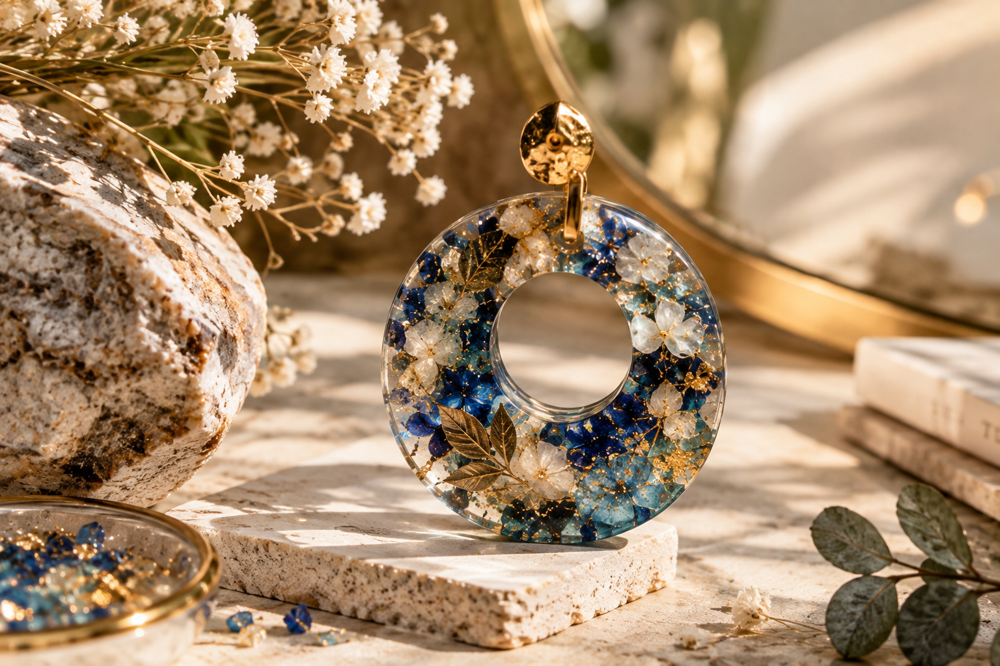
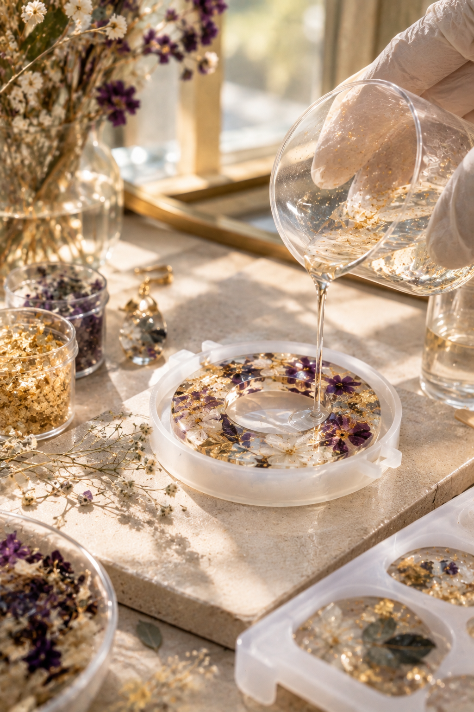
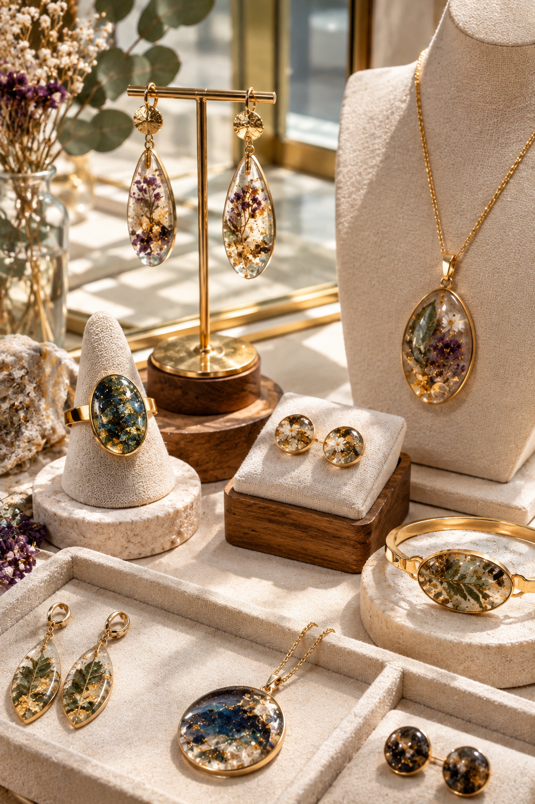
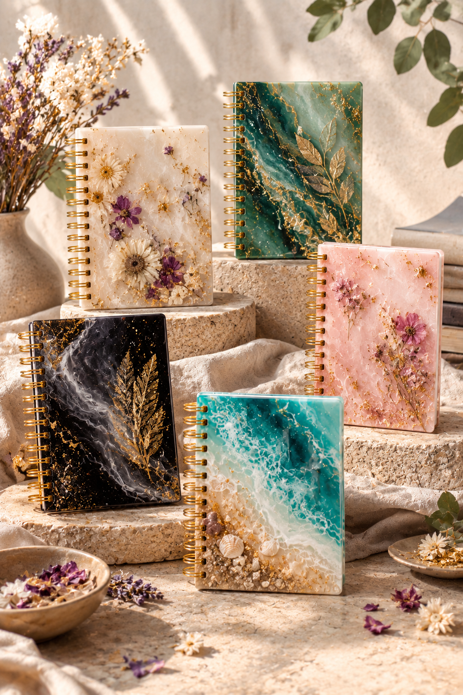
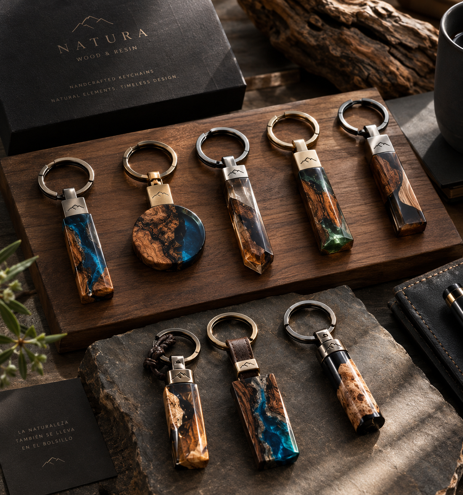
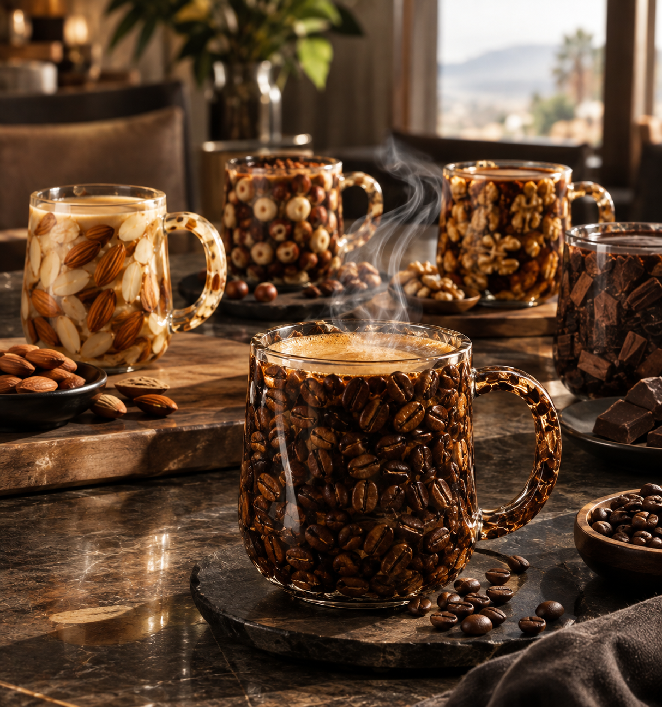
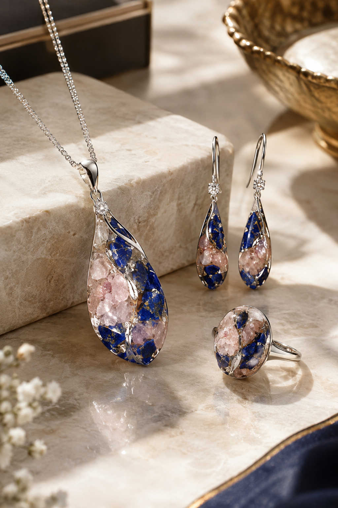

Un material, infinitas direcciones
El arte de transformar lo cotidiano
Descubre todo lo que puede convertirse cuando la resina se encuentra con una buena idea.

El material
Todo comienza con una idea
La resina puede ser transparente, mineral, profunda, delicada, colorida o casi imperceptible. Puede convertirse en una joya, una portada, un objeto decorativo o algo completamente diferente.
Direcciones creativas
La resina no tiene un solo estilo
El mismo material puede producir resultados completamente diferentes. El estilo comienza mucho antes de mezclar la resina: comienza con la mirada de quien diseña.
Un vistazo rápido
¿Qué podrías crear?
-

Joyería -

Agendas -

Llaveros -

Tazas -

Accesorios -

Papelería -

Decoración -

Cuadros -

Relojes -

Lapiceros -

Separadores -

Objetos personalizados

Pequeño formato, gran precisión
Cuando la resina se convierte en joyería
Pequeños formatos, infinitas posibilidades. Transparencias, pigmentos, piedras, formas y detalles pueden convertirse en piezas que parecen pequeñas esculturas.
Diseño de escritorio
Objetos cotidianos, otra mirada
Una agenda puede ser funcional y, al mismo tiempo, convertirse en una pieza de diseño. Lo mismo ocurre con un lapicero, un separador o un marcapáginas: pequeños objetos que pueden llevar una intención estética propia.
Identidad propia
Cuando un objeto comienza a tener identidad propia
Personalizar no significa simplemente añadir un nombre. Significa crear algo que tenga una estética, una historia y una intención.
Más allá del objeto
Y también puede convertirse en arte
Composiciones abstractas, efectos minerales, capas de color y transparencia: la resina también es un medio para crear piezas puramente visuales.
Composición abstracta
Efecto geoda
Efecto océano
Pieza decorativa
Una técnica, decenas de caminos
Las posibilidades son más grandes de lo que imaginas
Joyería+ Papelería+ Objetos cotidianos+ Decoración+ Personalización+ Arte
Detrás de cada pieza
Lo que ves terminado comenzó mucho antes

Idea & diseño

Materiales & mezcla

Creación & curado

Resultado
Pero
Una buena idea también necesita técnica
Trabajar con resina implica conocer materiales, proporciones, mezclado, pigmentos, moldes, tiempos y procesos. Aprender estas bases permite que la creatividad tenga una estructura sobre la cual crecer.
Más allá de crear
Y entonces aparece otra posibilidad
Cuando aprendes a crear diferentes piezas, también puedes comenzar a pensar en colecciones, productos personalizados, regalos, pedidos y pequeños proyectos comerciales.
Última parada antes de la técnica
¿Qué crearías tú?
Tal vez una colección de joyería. Tal vez objetos para tu escritorio. Tal vez piezas decorativas. Tal vez algo que todavía no existe.

Para quien quiere ir más allá
Si quieres aprender la técnica, puedes comenzar por aquí
Existe una formación online dedicada al trabajo con resina que reúne fundamentos, materiales, técnicas y numerosos proyectos para comenzar a experimentar y desarrollar tus propias ideas.
- Formación 100% online
- Más de 60 clases en video
- Fundamentos de la resina
- Herramientas y materiales
- Pigmentos y moldes
- Distintos tipos de proyectos
- Personalización de piezas
- Costos y creación de marca
- Acceso de por vida*
*Según la información publicada por la propia oferta.
Antes de cerrar esta pestaña
Quizá tu próxima creación todavía no existe
La resina es solo el comienzo. Lo interesante empieza cuando decides qué hacer con ella.
Descubrir la formación